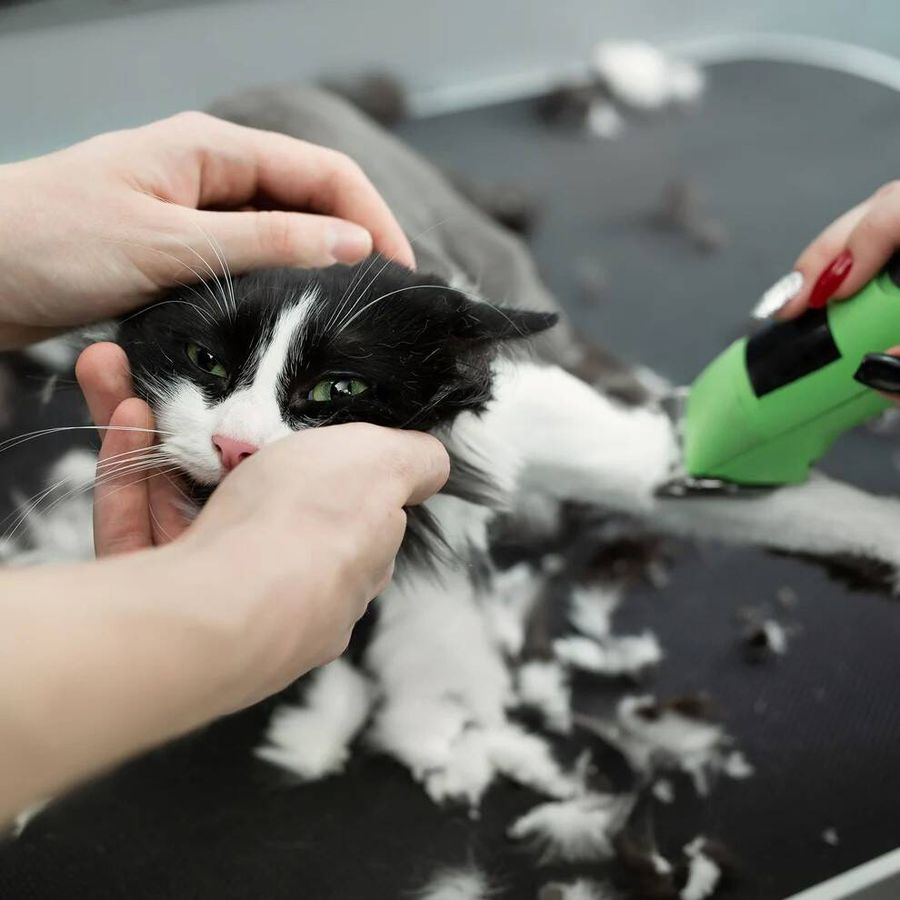

Toilettage complet – 70 $
Votre chat mérite le meilleur! Offrez-lui un soin complet dans un environnement calme, adapté et sécurisé, par des professionnels passionnés.
Le toilettage comprend :
- Shampooing sec sans rinçage
- Brossage et démêlage complet
- Tonte et/ou taille aux ciseaux
- Coupe des griffes
- Nettoyage des oreilles et des yeux
Durée : 40 à 50 minutes selon le type de poil et la coopération du chat